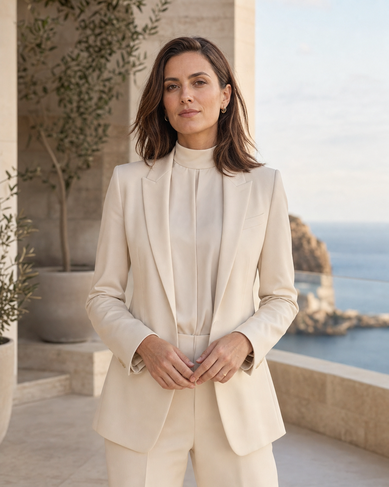
01 AI服装系列设计
AI-Generated Fashion Collection
🎯 创意构思
→
✍️ 提示词工程
→
🖼 AI生图
→
🔍 筛选优化
→
✨ 后期精修
→
📦 系列整合
使用 Midjourney + Stable Diffusion 完成系列服装概念设计，探索AI在服装视觉创作中的商业应用潜力。 结合服装设计专业知识（廓形、面料、色彩、工艺），通过精准的提示词工程引导AI生成具有商业价值的视觉内容。 涵盖国风、现代、解构等不同风格方向，体现对服装美学的专业把控与AI工具的深度结合。

AI服装设计系列一 — 探索传统元素与现代廓形的融合

AI服装设计系列二 — 面料质感与色彩情绪的实验性表达
🎨
服装设计专业审美 × AI工具高效生成，产出商业级视觉内容
🔧
精准提示词工程 — 从模糊创意到精确视觉的翻译能力
📐
多风格覆盖 — 国风/现代/解构/极简，展现风格广度
🔄
完整AIGC流程 — 概念→生成→筛选→精修→落地
02 AIGC海外人像视觉
Overseas Portrait Visuals
面向海外短剧、国际品牌与内容营销场景，设计四组不同用途的人像视觉。通过人物职业设定、服装材质、镜头景别、自然光与色彩气氛控制画面叙事，兼顾真实皮肤质感与商业可用性。所有人物均为原创虚构成年人，不对应现实人物或品牌。
角色定位
→
服装与场景设定
→
镜头与光线控制
→
质感筛选
→
商业化呈现
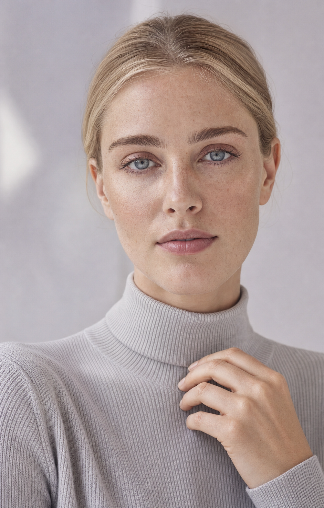
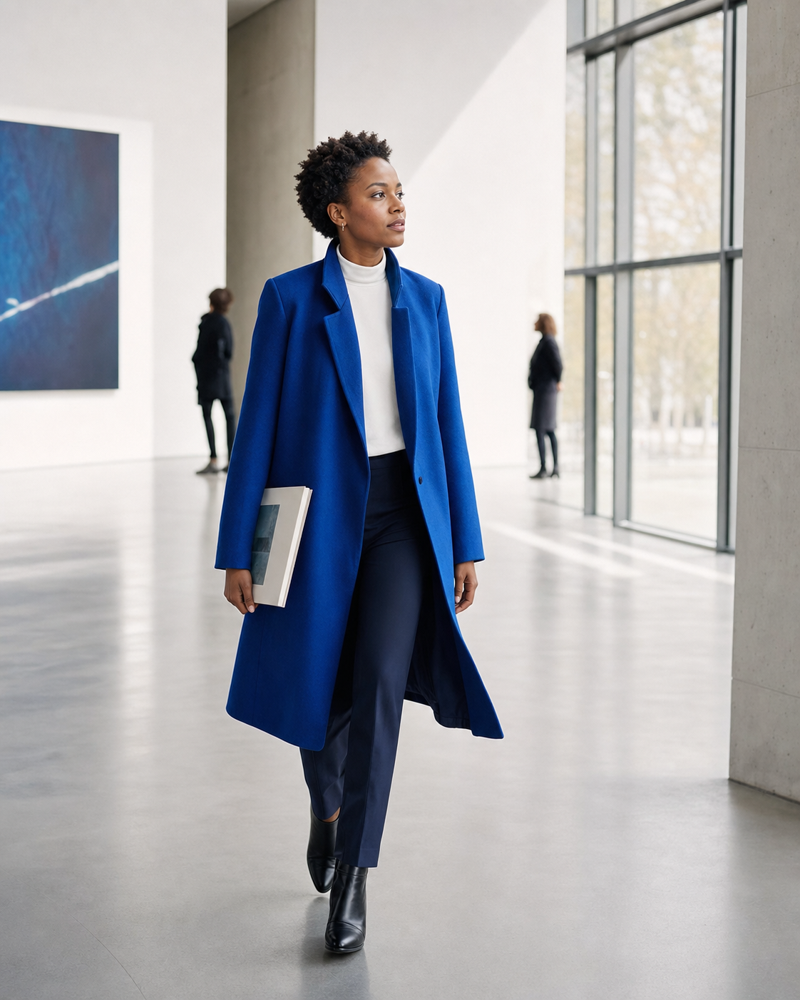
🎬覆盖短剧角色、时尚编辑、美妆广告与生活方式四类应用
🧵利用服装专业训练控制廓形、面料、配色与人物身份表达
📷通过景别、自然光、色温和背景虚化建立稳定镜头语言
✓重点检查皮肤、手部、服装结构与环境材质，避免塑料感
03 鸢都文创 · 品牌全案设计
鸢都文创 YUANDU WENCHUANG
独立完成的潍坊纸鸢文创品牌全案设计。"古韵新飞"— 传统风筝骨架为筋骨，现代设计语言为羽翼。 涵盖Logo系统、VI规范、辅助图形库、主题海报、包装系统、文创产品等全套品牌视觉资产。 全程使用 AI工具（Claude/ChatGPT）辅助创意发散、文案撰写、设计规范输出，效率提升约60%。
📂 查看鸢都文创完整设计交付页 →04 AI平面视觉设计
New Perspectives · International Culture Campaign
为虚构国际文化活动建立从主海报到城市媒介、社交内容的统一视觉。先确定珊瑚红、暖米白、深海军蓝的色彩系统，再通过人物拼贴、建筑切片与模块化字体形成核心识别；重点检查人物边缘、版式层级与不同尺寸下的视觉重心。
概念关键词→人物与构图生成→字体层级重组→多尺寸延展
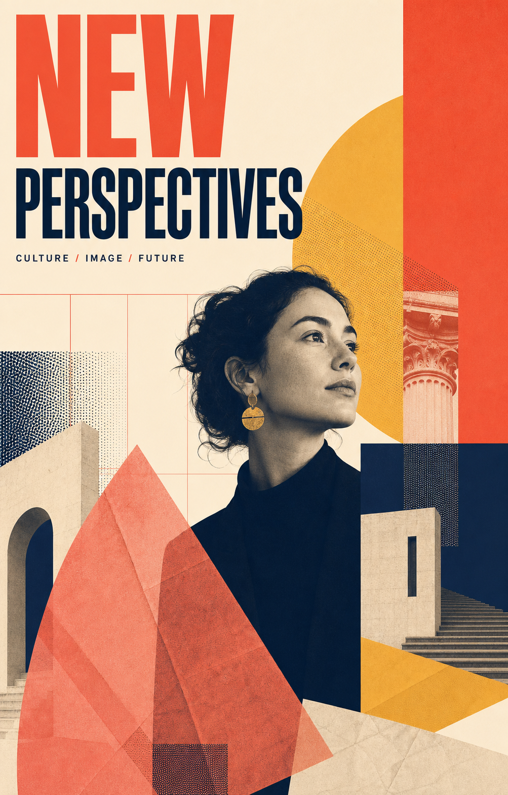
Key Visual国际文化活动主海报
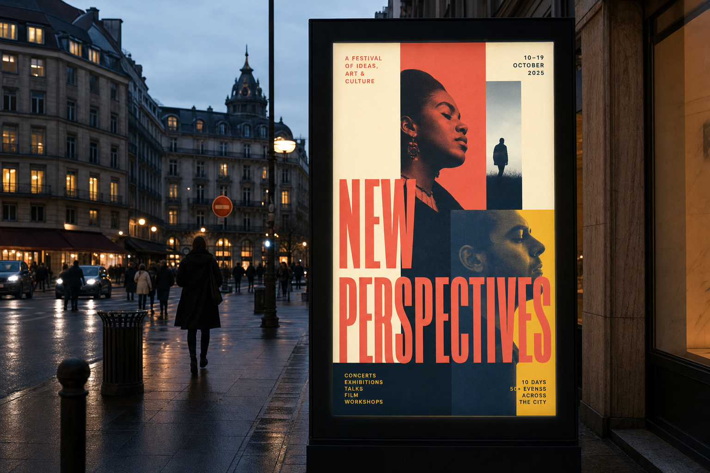
Out of Home城市灯箱媒介适配
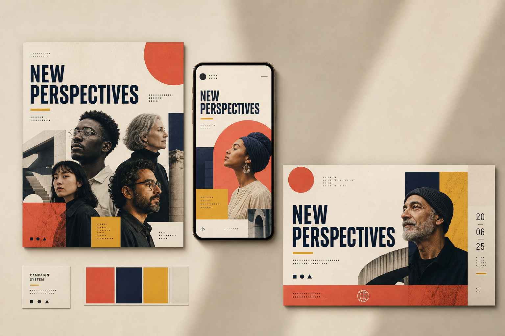
Social System社交媒体系列延展
▦以统一网格控制海报、灯箱与社交媒体的系列一致性
Aa重组AI生成画面中的文字区域，确保标题清晰、层级可读
◫针对横版、竖版与方形媒介重新分配视觉重心
✓检查人物边缘、手部、建筑透视和印刷材质细节
05 电商与数字化设计
Serein Atelier · Fragrance E-Commerce
围绕虚构香氛品牌 Serein Atelier，搭建商品主视觉—产品详情—移动购物界面的完整链路。生成阶段统一瓶型、标签、液体颜色与自然光方向；设计阶段把香调、容量、价格和购买动作拆成清晰信息层级，兼顾氛围感与商品识别。
商品设定→材质与光线控制→详情信息编排→移动端适配
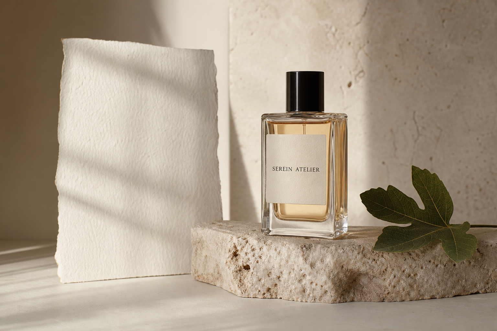
Commerce Hero香氛产品主视觉
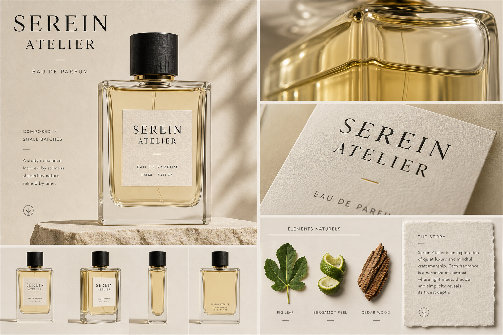
Product Detail材质细节与卖点编排
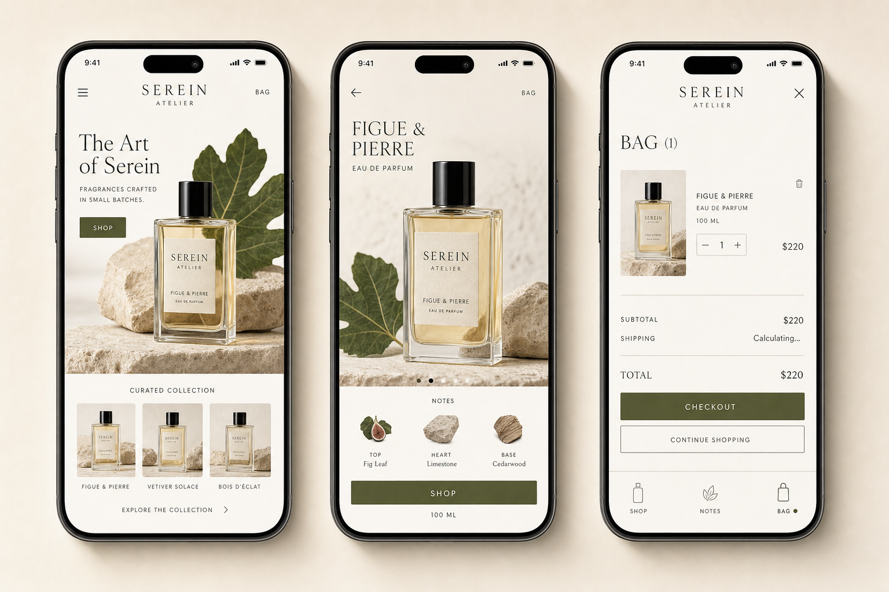
Mobile Commerce首页、详情与购物袋三屏
◇统一玻璃瓶型、琥珀液体、纸张标签与黑色瓶盖
☀用自然窗光和石材建立克制的国际生活方式氛围
≡按商品识别、香调说明、购买决策组织详情信息
▯将营销视觉延展至首页、商品详情与购物袋界面
06 商业插画设计
Atlas Notes · Travel Illustration Series
以虚构旅行刊物 Atlas Notes 为载体，建立人物、建筑、植物与地图碎片组成的城市插画系统。通过珊瑚色、钴蓝、沙色与橄榄绿限定色板，并统一人物比例、纸张颗粒与线条密度，使封面、城市海报和文创产品保持同一视觉语言。
主题与色板→人物建筑设定→系列一致性筛选→商业载体延展
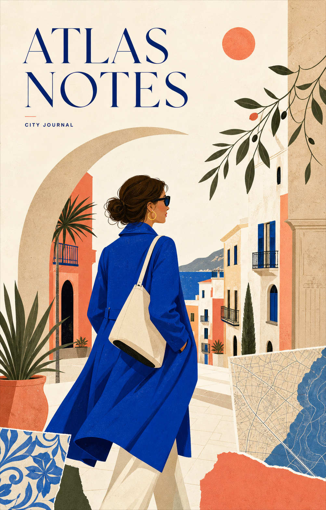
Editorial Cover城市旅行杂志封面
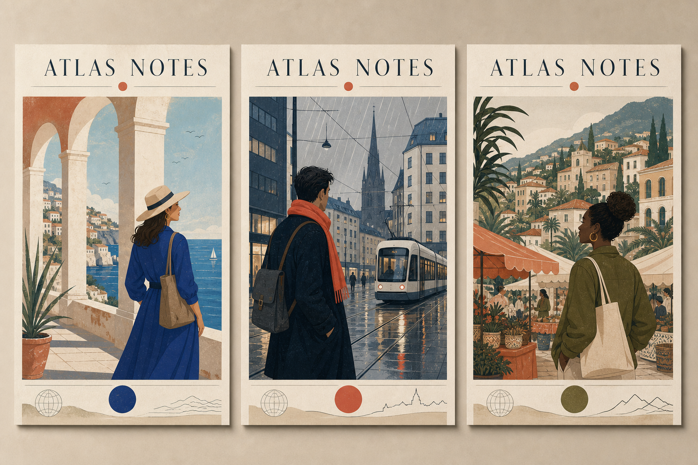
Poster Series三组城市文化海报
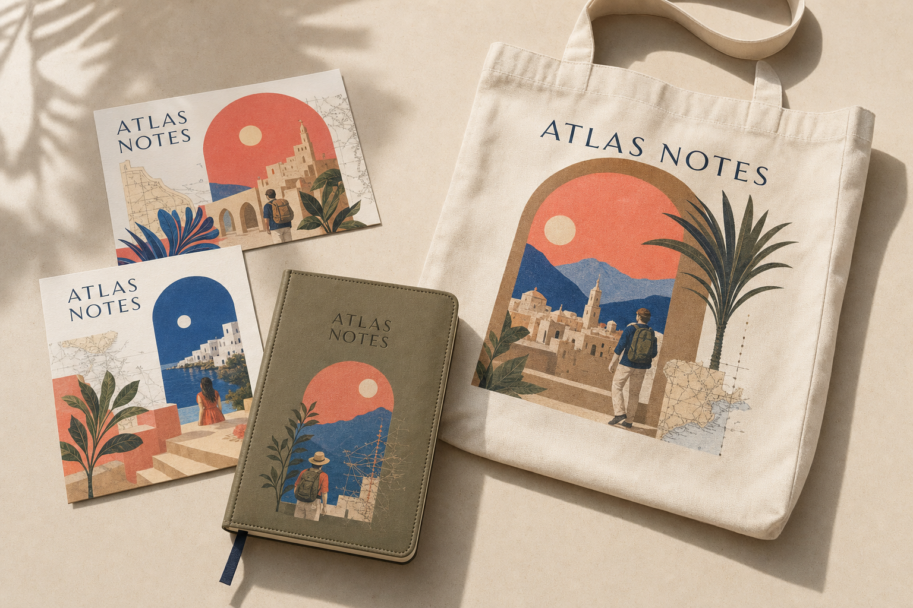
Merchandise明信片、手提袋与旅行手册
◉用限定色板和纸张肌理建立稳定的系列识别
♙统一不同人物的比例、服装形状与观察视角
⌂以建筑、植物和交通元素区分城市气质
▰验证插画在杂志、海报和文创载体中的可用性
07 其他设计作品
毕业设计 & 在校作品
🎓
毕业设计：蒙古族配色 × K12校服四大系列（工装/制式/运动/秋季），含全套设计稿+Style3D虚拟试衣+实物样衣
🪡
刺绣作品《石榴同心》：融合蒙古族盘纹与石榴籽意象，分层绣法（凸绣+珠绣）实现浮雕质感
🖌
蒙古袍效果图：Adobe Illustrator矢量绘制，传统服饰的数字化再现
🎯
清正廉洁主题海报：平面设计作品，体现视觉传达基础能力
🔬
大创项目：温控鼠标垫工艺参数优化（自治区级+校级立项，专利受理）
🖥
个人作品集网站：从零搭建，HTML/CSS响应式布局，GitHub Pages部署